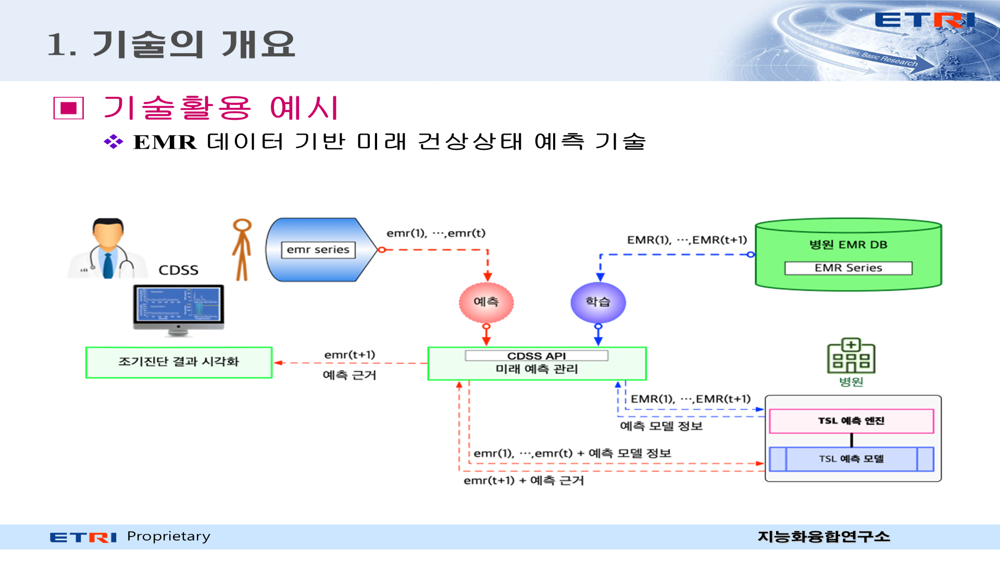

디지털 헬스케어의료 인공지능 ETRI Technology Marketing
미래 건강 예측을 위한 의료지능 딥러닝 엔진 기술
불규칙한 EMR의 결측치와 방문 간격을 반영해 미래 건강상태를 예측하고 판단 근거까지 제공
기술 개요
- 질환·투약 코드와 검사 수치가 함께 포함된 EMR을 학습 데이터로 활용
- 환자별 검사 누락과 불규칙한 방문 간격을 고려해 미래 건강상태 변화 예측
- 예측 결과에 영향을 준 데이터 근거를 추적해 임상의 판단 보조
기존 방식 대비 차별성
기존 기술
- 코드 데이터 중심의 현재 상태 진단
- 규칙적 시계열을 전제로 한 학습
- 예측 근거 확인에 한계
ETRI 기술
- 코드·수치 데이터 기반 미래상태 예측
- 불규칙 시계열과 결측치 반영
- 예측 결과의 근거 제시
활용 분야 및 기대효과
적용 서비스
임상의사결정지원개인건강관리의료 AI 솔루션예방 건강관리
도입 효과
- 미래 질환 위험 기반 선제적 건강관리
- 의료진의 진단·치료계획 수립 지원
- 의료데이터 기반 서비스 고도화

핵심 이전기술
EMR 전처리결측치 대치와 학습 데이터셋 구축
미래상태 예측불규칙 시계열 기반 딥러닝 모델 학습·추론
근거 추적예측 결과 해석을 위한 주요 근거 제시
적용 검증심혈관질환 관련 예측 시스템 적용 경험
기술이전 정보
기술번호3610-2021-02099
연구조직ETRI 의료정보연구실
제공 범위전처리·예측·근거추적 SW 및 기술문서
예상 수요자병원, 의료 AI·건강관리 서비스 기업